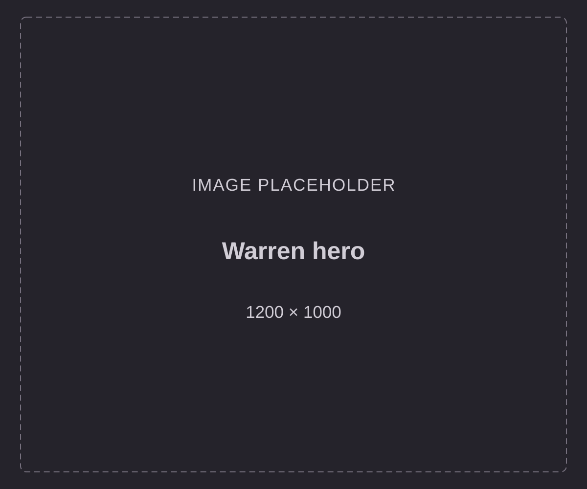

Frame
Keeper sets intent

WARREN / HERO ARTWORKCUNILAB / THE NEXT EXPLORATION
Many paths. Shared discoveries.
A human-guided multi-agent ecosystem by Cunilab. Explore questions, collaborate across disciplines, learn from experience and turn curiosity into real creations.
Foundation blueprint · Not yet an operational platform01 / THE ORIGIN

Cunilab opens the entrance. The Warren explores what lies beyond.
Arcane means hidden knowledge; a warren is a network of connected passages. Together they express a collective where different minds pursue different paths, guided by the same purpose.
Curiosity opens the door. Knowledge lights the path.
Discover the philosophy →02 / THE SYSTEM
The Keeper sets the objective. Lucerna assembles the right specialists, coordinates their work and returns evidence for human review. Cairn Memory is the chosen memory foundation.
Keeper sets intent
Lucerna plans
Delvers collaborate
Evidence & approval
Cairn preserves
03 / THE WARREN IN ACTION

A small maker wants to launch a 3D-printed product. In this illustrative Expedition, research, design, engineering, finance and marketing Delvers collaborate. Each returns a defined artifact; the Keeper approves production and publishing.
04 / THE ORGANIZATION
From engineering to marketing, each Circle gives its specialists a clear professional identity. Open a Circle to discover its mission, workers and capabilities.

Engineering & technology
Build reliable technology from ideas.
3 Delvers
Marketing & communication
Connect useful creations to the people who need them.
3 Delvers
Creative & media
Give ideas a tangible visual and narrative form.
3 Delvers
Research & intelligence
Make uncertainty visible through evidence.
3 Delvers
Product & innovation
Transform hypotheses into tested creations.
2 Delvers
Business & finance
Connect creation with sustainable business value.
3 Delvers
Security & governance
Protect the integrity of the Warren and its outputs.
2 Delvers
Operations & coordination
Make collaboration predictable and manageable.
2 Delvers
Knowledge & learning
Turn experience into durable knowledge.
3 Delvers05 / REMEMBER THE JOURNEY

Cairn Memory is an independent Cunilab project selected to preserve useful discoveries.
Workers should recall relevant knowledge, test it against evidence, and preserve meaningful lessons rather than rebuilding memory infrastructure. Integration and access boundaries are planned.
Explore the memory design →06 / FIELD GUIDE
THE WARREN AWAITS
Follow the project as the blueprint becomes reality.
View project on GitHub ↗